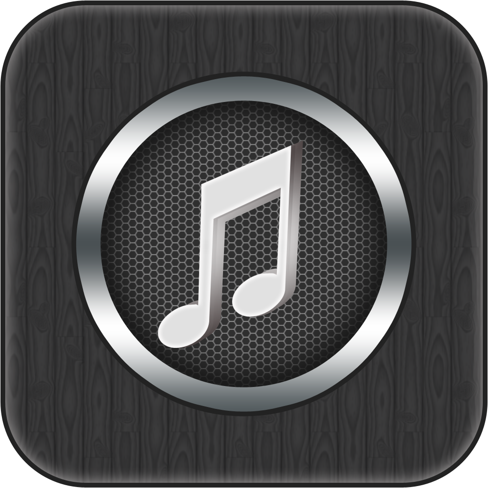

Music

- Song 1
- Song 2
- Song 3
- Song 4
- Song 5
- Song 6
Add more songs from the below list by simple click add song and than enter given url of song :-
- Kalimba.mp3
- Kehndi Hundi Si.mp3
- Khaab.mp3
- Khairiyat.mp3
- Lo Maan Liya - Arijit Singh - 320Kbps.mp3
- Maid with the Flaxen Hair.mp3
- 01 Chogada - Loveratri.mp3
- 01. Agar Tum Miljao - Female.mp3
- 01. Tu Jo Hans Hans Ke.mp3
- 02 Kaun Tujhe (MS Dhoni) Palak 190Kbps.mp3
- 02 Sawarne Lage - Mitron.mp3
- 04 Kamariya - Mitron.mp3
- 04. Janam Janam Jo Saath.mp3
- 07 Channa Mereya - Arijit Singh 190Kbps.mp3
- 10 Bulleya - Amit Mishra 320Kbps.mp3
- Aaj Se Teri - Padman (Arijit Singh) 190Kbps.mp3
- Bol Do Na Zara (Azhar) Armaan Malik 320Kbps.mp3
- Brown Munde - AP Dhillon.mp3
- Chup Nahi Chup Hai Ranjha.mp3
- Coca Cola - Luka Chuppi.mp3
- Duniyaa - Luka Chuppi.mp3
- Gal Karke Song Asees Kaur.mp3